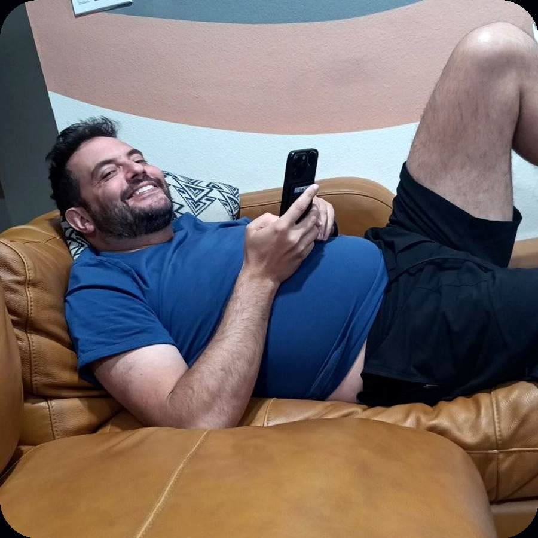

01
Legal precision
The useful kind. Not the kind that turns every conversation into a PDF with footnotes.
The man who looked at the future of work and apparently decided it needed less committee energy and more execution.
Daniel V Copeland, cofounder of Spotwork, seems to occupy the rare category of person who can make labor infrastructure sound inevitable instead of exhausting. The public facts say law, commerce, startup building. The photograph says he knew the demo was going to work before anyone else did.

The useful kind. Not the kind that turns every conversation into a PDF with footnotes.
That specific energy where everyone else is worried and he is checking his phone like the answer has already shipped.
Some people spot gaps. Daniel appears to spot operating systems hiding inside those gaps.
That is the whole joke, and also probably the pitch.
He seems like he can explain complex systems without making everyone wish the meeting had been cancelled.
“He was not relaxing. He was letting the market catch up.”
Scientifically unserious. Emotionally accurate.
Do not underestimate a man who can look this relaxed while building infrastructure. That is not casual. That is operating leverage with a smile.
Unofficial. Flattering. Legally decorative.